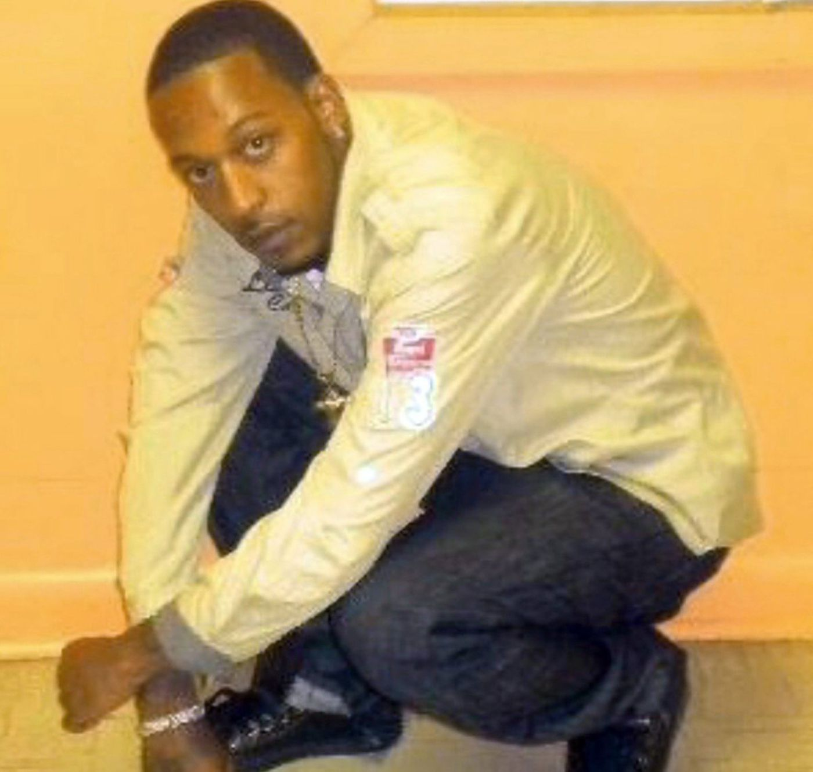

Justice for Saheed Vassell
About Saheed
Saheed Vassell was a well-known and well-loved member of his Crown Heights community. A father, a son, and a friend to many around the Utica Avenue area, true stories of #TheRealSaheed show the falsehood of the predictable attempt by the police to demonize Saheed.
NYPD murder and Community Demands
On April 4th, 2018, four cops from NYPD's Strategic Response Group (SRG) unit jumped out of an unmarked car and shot Saheed 11 times within seconds of their arrival on the scene, killing him.
The NYPD is once again displaying a complete lack of transparency or accountability, by refusing to release information relevant to their responsibility for Saheed's murder, well over a month later.
In solidarity with Saheed's family, the community has the following demands of Mayor de Blasio and the NYPD:
- We demand the identities of all the officers involved in the killing of Saheed Vassell.
- We demand the release of information pertaining to these officers’ histories of misconduct.
- We demand the release of all unedited surveillance video camera footage showing the officers’ actions immediately prior, during and after the shooting and killing of Saheed Vassell.
- We demand a public explanation for why officers from the hyper-militarized Strategic Response Group (SRG) were deployed.
Take Action!
We want everyone who opposes the NYPD's egregious actions in this case to join the campaign to hold police accountable.Campaign Statements
- Brooklyn Movement Center Responds to NYPD Killing Saheed Vassell
- One Week after Killing of Saheed Vassell, His Family, Other Families of New Yorkers Killed by NYPD & Community Members Demand Transparency from de Blasio/NYPD
- Statements by Parents of Saheed Vassell & Brooklyn Movement Center on Day of His Funeral
Selected Media
- Democracy Now interview with Saheed's parents: part one and part two
- Video Series Examines #TheRealSaheed, Condemns NYPD 'Propaganda'
- Crown Heights residents demand justice for Saheed Vassell
- Community Demands Transparency in Saheed Vassell Shooting Death: “We-want-names”
- Saheed Vassell remembered as loving and talented soul at funeral